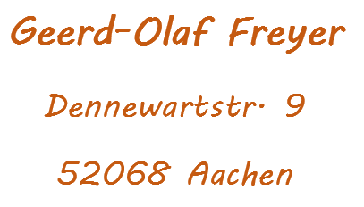

Ich sammle keinerlei Daten.
Diese Seite enthält keine
verlinkten Ressourcen, welche Tracking auslösen können.
Die Schriftart Syne wird als lokale Ressource geladen.
Die Seite ist auf Github Pages gehostet, wobei ich keinen Einfluss
darauf habe, welche Daten von Github gesammelt werden.
Bitte
beachten Sie dazu die entsprechenden Informationen auf
github.com.
Github sammelt
personenbezogene Informationen von Besuchern, u.a. die IP, um
gesetzliche Bestimmungen zu erfüllen und die Sicherheit und
Integrität der Website und der Dienstleistung zu gewährleisten.
Die Seite bindet keine direkten Javascript- und CSS-Dateien von
externen Quellen ein.
Falls über Github Einbindungen stattfinden, habe ich keine
Kontrolle über mögliches Tracking, das dadurch verursacht wird.
Ich übernehme keine Haftung für die Inhalte externer Links.
Für
den Inhalt der verlinkten Seiten sind ausschließlich deren
Betreiber verantwortlich.
Eine Computerspiel-Umsetzung des Brettspiels "Peak" von Andreas Kuhnekath-Häbler
Das Holzbrettspiel "Peak" ist ein 2-Personen-Spiel von Andreas Kuhnekath-Häbler, erschienen bei Gerhards Spiel und Design:
https://www.spielewerkstatt.eu/de/startseite/187-peak.html
In einer vorläufigen C#-WPF-Implementierung und dann auch in dieser Vanilla-Javascript-Webanwendung (die ziemlich direkt auf meinem C#-Code aufbaut) bewegt sich das Spiel weg vom Turmbau hin zu einer abstrakteren Art des Addierens von Zahlen.
Auf der niedrigsten Spielstufe kann ein einfacher Zufallsalgorithmus als Computergegner eingestellt werden. Für höhere Spielstufen kann der Minimax-Algorithmus (mit unterschiedlichen Suchbaumtiefen) als Computergegner dienen. Der Minimax-Algorithmus ist ein Algorithmus zur Bestimmung der optimalen Spielstrategie für endliche Zwei-Personen-Nullsummenspiele mit perfekter Information. Wikipedia
Unbeschriftete farbige Felder haben den Wert 1. Im Wechsel der Farbe auf einem 6x6-Gitter kann genau ein Ursprungsfeld mit dem anfänglichen Zahlenwert 1 auf genau ein anderes Zielfeld mit einem Zahlenwert einer beliebigen Farbe verschoben werden. Der Zahlenwert des Zielfeldes wird dann um 1 erhöht und es erhält die Farbe des Ursprungsfeldes, das seinerseits leer und farblos bleibt. Als zwingende Bedingung darf dieser Zug nur diagonal oder orthogonal über Zwischenfelder (beliebiger Farbe oder auch leer) mit einem Gesamtwert von 2 erfolgen. Das Zielfeld muss mit einem Wert größer oder gleich 1 gefärbt sein.
Durch das Verschieben der Zahlenwerte auf diese Weise entstehen schrittweise höhere Zahlenwerte der jeweiligen Zugfarben. Von einem Feld mit einem Zahlenwert größer als 1 kann kein Zug ausgeführt werden. So kommt es häufig vor, dass ein Zug von einem Feld nur einmal im Spiel ausgeführt wird.
Wer nach den Regeln nicht ziehen kann, muss passen. Wenn der nachfolgende Zug des anderen Spielers neue Möglichkeiten bietet, geht das Spiel weiter. Wenn nicht, endet das Spiel. Für jedes Zahlenfeld einer Farbe, dessen Wert größer oder gleich 2 ist, erhält man die entsprechenden Farbpunkte. Der Spieler, der die meisten hat, gewinnt das Spiel.